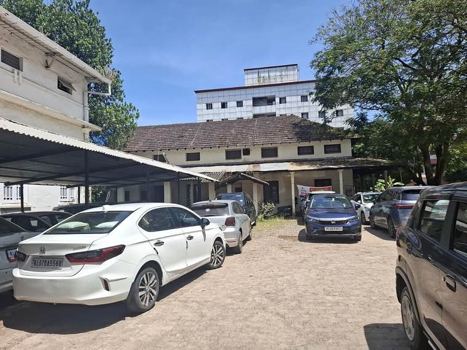
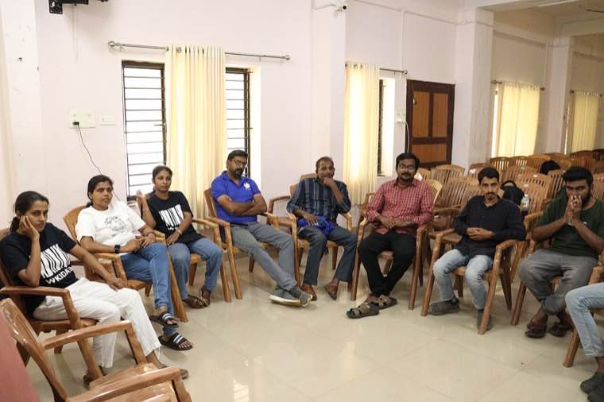

When easy processes meet dignity in delivery.
Citizen-centric governance is not a slogan — it is a design discipline. It begins from the assumption that the citizen's time, dignity and information are inputs to be respected, not friction to be tolerated.
Done well, the same office that once issued certificates in 21 days does it in 48 hours. The same officer who once explained rules to citizens now explains options. The same department that once pushed forms now pushes outcomes.
- Processes designed for the citizen's day, not the office's calendar
- Information available before it is asked for
- Service standards published, tracked, and honoured
Five values, repeated until they become culture
Frameworks come and go. These values are the soil.
Transparency
Information that citizens can find, follow, and trust — from budgets to the movement of their own file.
Dignity
Every encounter with the state must affirm the citizen's standing — never diminish it.
Inclusion
Designs that reach the last person first — and assume that the easiest user is not the only user.
Accountability
Clear ownership of outcomes. Real consequences for failure. Public recognition for excellence.
Fairness
Rules applied evenly. Discretion exercised with reason. The powerful treated the same as the powerless.
When the right thing and the easy thing diverge — the framework matters.
Ethical public service is not the absence of dilemmas. It is the presence of a clear way to think through them. Codes of conduct, conflict-of-interest declarations, and decision frameworks are the scaffolding that protect officers — and the public — from drift.
- Code of conduct: written, read, and revisited
- Conflict of interest: declared before it becomes a problem
- Ethical decision frameworks: structured questions for hard moments
- Whistleblower channels: independent, protected, taken seriously

Public problems are systems. Public solutions must be too.
Departments don't fail one at a time. They fail in chains — health depends on water, water depends on land records, land records depend on local self-government. A systems lens helps officers see beyond their immediate KPI and design for the whole.
- Mission-mode reforms with cross-department sponsorship
- Convergence across departments around the citizen, not the org chart
- Data-driven governance with live dashboards and feedback loops
- Institutional strengthening — capacity, structure, culture, processes

Climate-resilient public administration
The administration of the future is not just digital. It is also climate-aware, disaster-ready, and intergenerationally fair.
Mainstreaming climate
Climate considerations built into every project — from procurement to placement.
Disaster-resilient planning
Hazard mapping, redundancy, and pre-positioned response — not improvisation under stress.
Circular procurement
Government as the largest buyer — using that leverage for sustainability.
Ecosystem-based local plans
Watershed, forest and coastal logic baked into Panchayat-level decisions.
Green building & infra
Norms, audits and incentives that make sustainability the default, not a premium.
Intergenerational accounting
Decisions today that leave tomorrow's institutions, environment and communities intact.
Definitions you'll see across this portal
From principle to playbook.
See how these foundations show up in Kerala, Andhra Pradesh, and beyond.